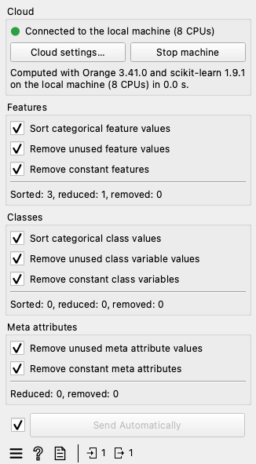

Removes unused values and constant columns of a cloud table and sorts the values of categorical columns, as Orange's Purge Domain does, decided on all rows on the machine.

Like every Cloud widget, it has a Cloud box at the top: whether a machine is connected, Cloud settings… and Stop machine, and what the last job ran with, how long it took and what it cost. See Cloud widgets.
It works like Orange's Purge Domain, with the same options for features, the target (classes) and meta attributes: sort the values of categorical columns, remove unused values, and remove constant columns. Below each group, the widget counts the sorted, reduced and removed columns.
A typical use is after Select Rows: when the rows that are left no longer use some values of a categorical column, Cloud Purge Domain removes those values. The machine decides with Orange's own code on all rows.
Orange's own Purge Domain can't decide this on a cloud table: it sees only the placeholder row, which uses no values. It either stops with an error that points here, or its step is refused when a Cloud widget uses the table.
The purged table is a new table on the machine, about as large as the input. If the machine hasn't enough memory for it, the widget says so; choose a larger machine size in Cloud settings.